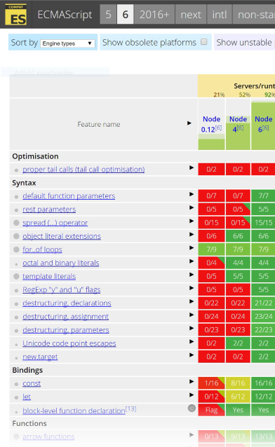

SeminarJavascript Technology
WS 2016
Server side JavaScript with Node.js basics
Created by Alexander Lill, Philippe Buschmann, Josef Brandl
Node.js
What is it?
Node.js
- JavaScript runtime environment
- Event-driven architecture → Single threaded
- Asynchronous I/O
- Optimized throughput and scalability
- Implementation of backends (APIs)
- Other purposes, e.g. the editor »Atom«
How did Node.js come to be?
November 8th 2009
Ryan Dahl introduces Node.js to the world at JSConf.eu
- Server-side JavaScript
- Build on Google's V8
- Evented, non-blocking I/O
- CommonJS module system
- 8000+ lines of C/C++, 2000 lines of JavaScript
January 12th 2010
Isaac Schlueter releases NPM,
a package manager for Node.js
November 10th 2010
Copyright of Node.js is passed to the company Joyent.
July 2011
Release of first Node.js version running on Windows

November 25th 2011
Node ships with NPM since version 0.6.3
December 2014
The Node.js fork io.js is created
Fedor Indutny created the fork and many contributers joined him
- More frequent releases
- Includes latest releases of V8
September 14th 2015
Node version 4.0.0 is released under the direction of the newly formed Node.js Foundation
- Regular releases (1-2 per month)
- Swift decisions through Technical Steering Committe
- NPM has become very reliable
A healthy open source project
Sources
Node.JS Module Pattern
An introduction to coding node.jsCommonJS
- Optimized for server-side environments
- Each file is one module
- Each module can be authored individually
→ Increases team scalability - Each module can be debugged independently
→ Decreases testing costs - Each module's scope and context can be controlled
→ Isolate the modules
- Each module can be authored individually
Nothing. It's the same
More useful variables
NPM
A quick introduction
Package Manager
- Included in node.js
- Entirely written in JavaScript
- Command line interface
Usage
npm install <packagename>
Local VS global
npm install -s <packagename>
npm install -g <packagename>
→ Use in CLI
{
"name": "Catch-em-all",
"version": "0.0.0",
"description": "Project E of JavaScript Seminar at TU Munich",
"dependencies": {
"body-parser": "^1.15.2",
"express": "^4.14.0",
"express-http-proxy": "^0.10.0"
}
}
Automation
npm start; npm stop; npm restart; npm test
{
...
"scripts": {
"start": "node lib/main",
"test": "node tests/main && standard"
},
...
}
Excellent ES2015 support
92% for Node 6
kangax.github.io (See next slide)
Excellent ES2015 support
Property Shorthand
const name = 'Max Mustermann'
const age = '67'
// Old
const person = { name: name, age: age }
// New
const person = { name, age }
Method Definition Shorthand
// Old
const obj = {
hello: function hello () { console.log('hello') }
}
// New
const obj = {
hello () { console.log('hello') }
}
obj.hello()
Arrow functions
// Old
let studentNames = students.map(function (s) { return s.name })
// New
let studentNames = students.map(s => s.name)
this
Classes
class Student extends Person {
constructor (name, university) {
super(name)
this._university = university
}
get university () { return this._university }
}
Promises
const fs = require('fs-promise')
fs.readFile('hello.text')
.then(buffer => { ... })
.catch(error => { ... })
Destructuring Assignment
// Old
function processPerson (options) {
console.log(options.name, options.age)
}
// New
function processPerson ({ name, age }) {
console.log(name, age)
}
options parameter
Default Parameter Values
function inviteToParty (name = 'Max Mustermann') {
...
}
Conclusion
- New features are available
- Their usage improves code quality
Questions and Answers
Next:
Project presentation
Project presentation
Overview
| Wednesday |
|---|
Group 6
|
| Friday |
|---|
Group 9
|
Group 10
|
Team E
Catch 'em all
Mission statement
Catch 'em all
Mission statement
Mission statement
ASSEMBLE ALL THE THINGS
ONE DOES NOT SIMPLYASSEMBLE ALL THE THINGS
Mission statement
- Integrate the other teams' projects
- into a mobile-first website
- showing sighted Pokemons
- and predicted Pokemon appearances
- as well as Pokemon details
- and a Twitter feed
Design
PokeMap
- Menu button
- Location & Pokemon search
- Zoomable map
- Filter sheet button
- Pokemon detail sheet
Filter by Pokemon
- Combi select for
- Pokemon
- Types
- Name filter
Filter by Time
- Time ranges for
- Sightings
- Predictions
Sidebar

- PokeMap
- PokeDex
- About page
- Imprint and Disclaimer
PokeDex
- Menu button
- Location & Pokemon search
- PokeDex search
- List of pokemons
PokeDetail
- Back button
- Pokemon name & number
- Pokemon description
- Pokemon types, weaknesses & strengths
- Pokemon attributes
- Pokemon evolution
- Pokemon attacks
- Live tweets
Questions and Answers
we are done \o/
Note: This is a "cheer" smiley